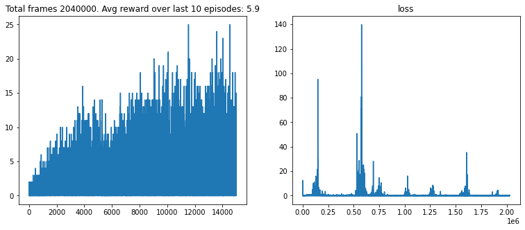

BREAKOUT: DQN PER AGENT
Deep Q-Learning with Prioritized Experience Replay (PER)
AGENT PERFORMANCE DEMO

Project Files & Resources
View the full implementation, including network definitions and environment wrappers, in the complete Jupyter Notebook.
View Full Jupyter Notebook ($\texttt{DeepRL\_breakout.ipynb}$)
The DQN Agent with Prioritized Experience Replay
This DQN implementation utilizes **Prioritized Experience Replay (PER)**, where transitions with higher TD-error (greater surprise) are sampled more frequently. This accelerates learning by focusing on the most informative experiences.
/**
* DQN Agent for Breakout using Prioritized Experience Replay (PER).
* The ReplayBuffer must be a specialized SumTree structure to handle priorities.
*/
class DQNPrioritizedAgent {
constructor() {
this.model = this.createModel();
this.targetModel = this.createModel();
this.targetModel.setWeights(this.model.getWeights());
// ... Hyperparameters (GAMMA, EPSILON, BATCH_SIZE) ...
this.ALPHA = 0.6; // PER parameter: controls priority degree
this.BETA = 0.4; // PER parameter: controls importance sampling correction
// this.memory = new PrioritizedReplayBuffer(MEMORY_SIZE); // Specialized buffer
console.log("DQN PER Model initialized (TensorFlow.js simulation)");
}
/**
* Stores an experience tuple (s, a, r, s', done) into the memory buffer.
* Initially, the priority (p) is set to the maximum observed priority.
*/
remember(state, action, reward, nextState, done) {
// max_p = this.memory.getMaxPriority();
// this.memory.add({ state, action, reward, nextState, done }, max_p);
}
/**
* Trains the model using a batch sampled according to priority.
*/
async learn() {
if (this.memory.length < this.BATCH_SIZE) return;
// 1. Sample batch and calculate Importance Sampling (IS) weights
// const { batch, indices, weights } = this.memory.sample(this.BATCH_SIZE, this.BETA);
// const states = tf.tensor2d(batch.map(m => m.state));
// const nextStates = tf.tensor2d(batch.map(m => m.nextState));
// 2. Calculate TD-error (Temporal Difference Error)
// 3. Calculate Target Q-values (Standard DQN or DDQN rule)
// ... (target calculation: R + gamma * max_a' Q'(s', a')) ...
// 4. Fit/Train the main model
// The loss is weighted by the IS weights to correct for biased sampling.
// const loss = tf.losses.meanSquaredError(targetTensor, currentQ).mul(weights).mean();
// await this.model.fit(states, targetTensor, { epochs: 1, batchSize: this.BATCH_SIZE, sampleWeight: weights, verbose: 0 });
// 5. Update priorities in the buffer using the new TD-error (abs(target - prediction))
// this.memory.updatePriorities(indices, new_td_errors);
// ... Epsilon decay ...
}
// ... createModel() and updateTargetModel() remain similar ...
}Prioritized Experience Replay (PER) Concept
PER replaces uniform sampling by prioritizing experiences based on their magnitude of **Temporal Difference (TD) error**, $|\delta|$. High TD-error means the agent was "surprised," making that sample more valuable for learning.
// 1. Sampling Probability ($P_i$)
// $\alpha$ determines how much prioritization is used ($\alpha=0$ is uniform sampling).
$P(i) = \frac{(\text{TD-Error}_i + \epsilon)^\alpha}{\sum_k (\text{TD-Error}_k + \epsilon)^\alpha}$
// 2. Importance Sampling (IS) Weight ($\omega_i$)
// $\omega_i$ corrects the bias introduced by non-uniform sampling.
// $\beta$ anneals from a starting value (e.g., 0.4) to 1.0 over training.
$\omega_i = (\frac{1}{N} \cdot \frac{1}{P(i)})^\beta$
// The loss function is then weighted by $\omega_i$:
$\text{Loss} = \omega_i \cdot \text{MSE}(\text{Target}, Q(\text{State}, \text{Action}))$Jupyter Notebook Training Initialization
The following cells initialize the PyTorch models, environment, and training components before starting the main $\texttt{train\_modif}$ loop. Note the environment ID change to $\texttt{BreakoutNoFrameskip-v4}$.
import torch
import torch.optim as optim
from model import DQN
from wrappers import make_atari_env
from replay_memory import ReplayBuffer // Note: This should be a PER implementation
from utils_modif import train_modif, test_modif
from Param_modif import *
from IPython.display import clear_output
import matplotlib.pyplot as plt
%matplotlib inline
device = torch.device("cuda" if torch.cuda.is_available() else "cpu")
device
// Output: device(type='cuda')
env_id = "BreakoutNoFrameskip-v4"
env = make_atari_env(env_id)
print(env.action_space)
// Output: Discrete(4)
// Output: ['NOOP', 'FIRE', 'RIGHT', 'LEFT']
current_model = DQN(env.observation_space.shape, env.action_space.n).to(device)
target_model = DQN(env.observation_space.shape, env.action_space.n).to(device)
optimizer = optim.Adam(current_model.parameters(), lr=0.0001)
replay_buffer = ReplayBuffer(MEMORY_SIZE) // Assuming this is now a PER buffer
target_model.load_state_dict(current_model.state_dict())
// Output: <All keys matched successfully>
train_modif(env, current_model,target_model, optimizer, replay_buffer, device)
DQN with PER Training Algorithm (Pseudo-code)
The core logic now involves calculating the Temporal Difference (TD) error to set the priority for new samples and to determine the Importance Sampling weight $\omega$ for training.
Initialize Q-network Q with random weights $\theta$.
Initialize target Q-network Q' with weights $\theta' = \theta$.
Initialize **Prioritized** Replay buffer D.
For each EPISODE:
Initialize state $s$
For $t = 1$ to $T$:
// 1. Action Selection ($\epsilon$-Greedy Policy)
Select action $a = \underset{a}{\operatorname{argmax}} Q(s, a; \theta)$ (or random w/ $\epsilon$)
// 2. Environment Interaction
Execute action $a$, observe reward $r$, and new state $s'$
// 3. Calculate and Store Initial Priority
// Calculate TD-error $|\delta|$ for this new sample.
// Store experience $(s, a, r, s')$ in buffer D with priority $p \propto |\delta|^\alpha$.
Set $s = s'$
// 4. Training Step (Sampling and Optimization)
// Sample mini-batch $(s_j, a_j, r_j, s'_j)$ with probability $P_j$ from D.
// Calculate Importance Sampling weight $\omega_j$ for each sample.
// 5. Calculate Target Value ($Y_j$)
Calculate $y_j = r_j + \gamma \cdot \underset{a'}{\operatorname{max}} Q'(s'_j, a'; \theta')$
// 6. Update Main Network & Priority
// Calculate new TD-error: $\delta_j = y_j - Q(s_j, a_j; \theta)$
// Update network weights $\theta$ using weighted gradient descent:
Perform a gradient descent step on $\omega_j \cdot (\delta_j)^2$ to update $\theta$.
// Update the priority $p_j$ in D using the new $|\delta_j|$.
// 7. Update Target Network
Every $C$ steps: $\theta' = \theta$.
Decay $\epsilon$ and Anneal $\beta$
Training Performance Metric (Episodic Reward)
The graph below illustrates the agent's performance by tracking the episodic reward curve over training steps.
EPISODIC REWARD HISTORY
